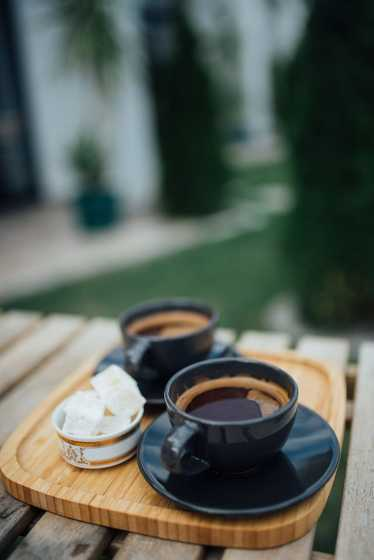
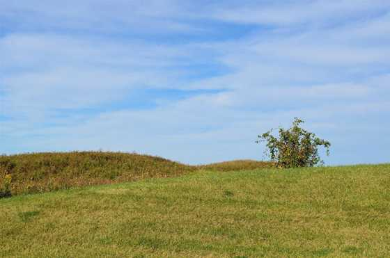
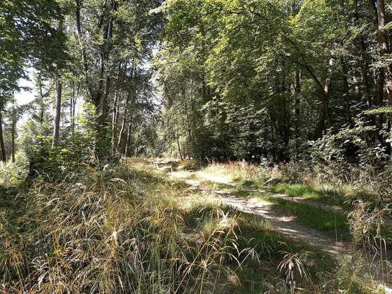
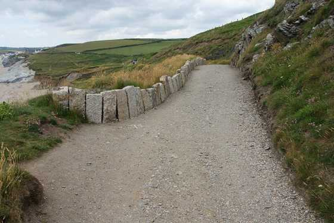
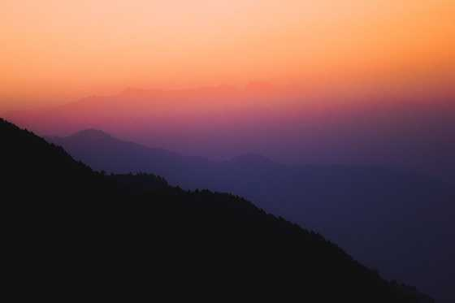

群馬県嬬恋村・卸売センター サンエイ地内
NOMAD COFFEEいそがしい日々の合間に、
焙煎したての一杯を。
特別な日のごちそうではなく、毎日にそっと寄り添う必需品としてのコーヒー。高原の村の小さなスタンドから。
ABOUT
お店のこと
NOMAD COFFEEは、軽井沢町追分での営業を経て、2026年7月に嬬恋村へ移転してオープンしたコーヒースタンドです。卸売センター サンエイの敷地内、右側の小さな建物で営業しています。
店主の今泉達也さんは神奈川県相模原市の出身で、コーヒーメーカーでの勤務を経て嬬恋村の地域おこし協力隊に。「忙しい人の合間に質の良いコーヒーを届け、暮らしの質を上げたい」「嗜好品ではなく、日常に寄り添う必需品を届けたい」という想いを語っています。煎りたてのフレッシュさを届けることが、村で事業をする意義とも。
店名「NOMAD」の意味は確認できていません。制作側のイメージとして、居場所を移しながら一杯を届けていく姿を重ねています(お店の公式な説明ではありません)。


VOICE
口コミ(イメージ例)
イメージ例
買い物のついでに
スーパーに寄ったついでに、温かい一杯を持ち帰れるのがうれしい。
イメージ例
豆を買って帰りました
煎りたての香りがよくて、家でもゆっくり楽しめました。
イメージ例
アイスでもおいしい
暑い日にアイスで飲んでも、しっかりコクがありました。
※ 口コミは制作側が作成したイメージ例で、実在のお客様の声ではありません。
ACCESS
アクセス
- 住所
- 〒377-1525 群馬県吾妻郡嬬恋村西窪44-1 卸売センター サンエイ地内
- 電話
- 準備中
- 営業時間
- 準備中
- 定休日
- 準備中
- @nomadcoffee2024
写真について
掲載写真はフリー素材のイメージで、店舗の実際の様子ではありません(撮影地は国内外を含みます)。








- meadow.jpg / 「BlueSkyWhiteCloudsGrassland.jpg」 Raysonho @ Open Grid Scheduler / Grid Engine / CC0 1.0
- trail.jpg / 「Forest trail, Oberlibbach.jpg」 Gerda Arendt / CC0 1.0
- larch.jpg / 「Larch forest at Vratica (La Porticina) 01.jpg」 Ajznponar / CC0 1.0
- lakemist.jpg / 「Mist on Lake Whatcom, 2019.jpg」 U.S. Department of Agriculture / CC0 1.0
- ridge.jpg / 「Misty Mountains in Norway (Unsplash).jpg」 Torbjorn Sandbakk / CC0 1.0
- grass.jpg / 「Windswept meadow (Unsplash).jpg」 Paul Jarvis / CC0 1.0
- cairn.jpg / 「Stacked stones by Thirlmere (4th July 2021).jpg」 Mtaylor848 / CC BY-SA 4.0
- lakemtn.jpg / 「Calm Yellowstone Lake and distant snowy mountains under cloud.jpg」 Z3lvs / CC0 1.0
- dusk.jpg / 「Sunset in Kashmir.jpg」 EbtesamAhmed / CC BY-SA 4.0
- fairy.jpg / 「Fairy meadow gb.jpg」 Ghafoorbalti / CC BY-SA 4.0
- coast.jpg / 「Stone walling by the coastal path - geograph.org.uk - 4071678」 Bill Boaden / CC BY-SA 2.0
- pathtrees.jpg / 「Tree-lined path - Photo by Giovanni Ussi.jpg」 Giovanni Ussi / CC BY-SA 4.0
- beans.jpg / 「Roasted arabica coffee beans Minca.jpg」 Roger Burger / CC0 1.0
- mug.jpg / 「Coffee steaming in a mug.jpg」 PedanticNarrativeController / CC0 1.0
- tray.jpg / 「Black coffee on wooden table outdoors. (51528275111).jpg」 Nenad Stojkovic / CC BY 2.0